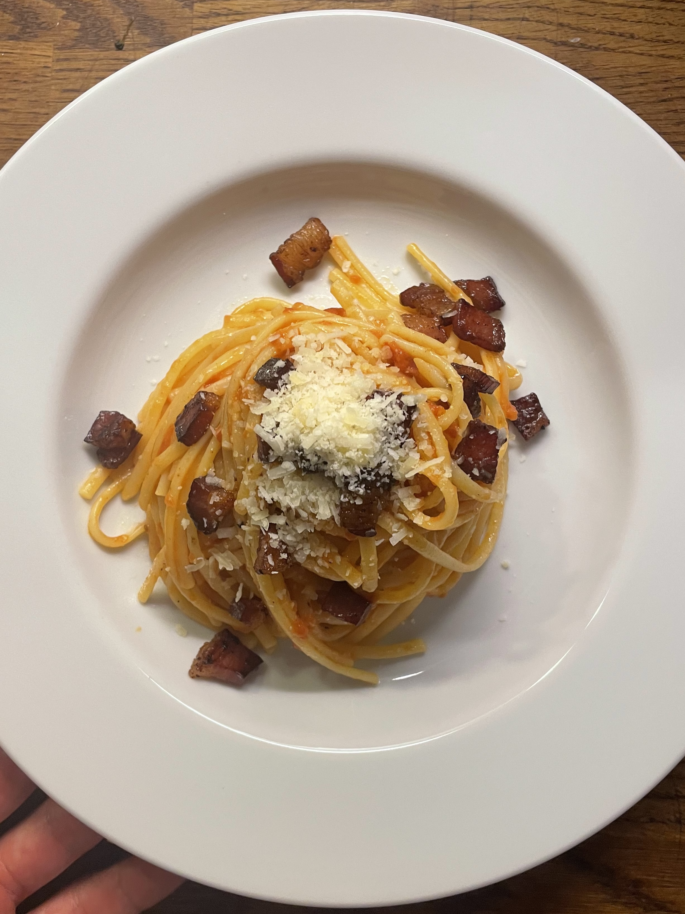

←
⌂
Amatriciana
Ingredienser:
- Spaghetti (eller annan valfri pasta)
- Guanciale (italienskt fläskkind)
- Tomatsås (gärna San Marzano-tomater)
- Riven pecorinoost
- Chiliflakes (valfritt)
- Salt och peppar
Instruktioner:
- Koka pastan enligt anvisningarna på förpackningen tills den är al dente.
- Under tiden, skär guanciale i små bitar och stek dem i en stekpanna tills de blir krispiga.
- Tillsätt tomatsåsen till stekpannan och låt den sjuda några minuter.
- Blanda den kokta pastan med amatricianasåsen och riven pecorinoost.
- Smaka av med salt och peppar. Se allergier